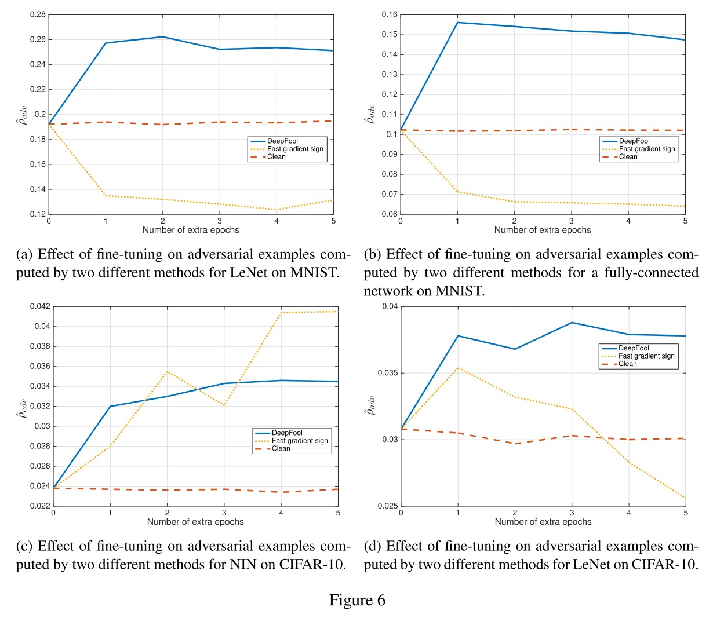

Adversarial Attacks
By LI Haoyang 2020.11.6 (branched)
Content
Adversarial AttacksContentWhite-box attackAdversarial example - ICLR 2014ConcernsDiscoveriesProblem formulationPerformanceAnalysis of unstabilityFGSM - ICLR 2015Fast Gradient SignAdversarial trainingObservationDeepFool - CVPR 2016Definition of robustnessDeepFool for binary classifiersDeepFool for multiple classifiersPerformanceInspirationsFormulated attacks by optimizations - SP 2017TargetLp distancePrevious methodsCarlini and Wagner attackPerformanceBreach defensive distillationInspirationsUniversal adversarial perturbation - CVPR 2017Problem formulationAlgorithmPerformanceObservationExplanationBlack-box attackPractical black-box attacks - CCS 2017Threat modelAttack strategySubstitute trainingPerformanceInspirationsAdversarial example in the physical world - ICLR workshop 2017MethodsPrinted adversarial exampleArtificial image transformationsDomain attack
White-box attack
Adversarial example - ICLR 2014
C. Szegedy, W. Zaremba, I. Sutskever, J. Bruna, D. Erhan, I. J. Goodfellow, and R. Fergus. Intriguing properties of neural networks. In International Conference on Learning Representations (ICLR), 2014. arXiv:1312.6199
This was the paper proposing the problem of adversarial example.
Concerns
The motivations are several concerns of deep neural networks:
- The semantic meaning of individual units. (DNN was found to be activated by configured noise as well as by normal inputs)
- The stability of neural networks to small perturbations to inputs (the problem of adversarial example)
Discoveries
Random vector also encodes semantic information?

For the activation of some layer $\phi(x)$, and natural bias vector $e_i$ associated with $i$-th units in this hidden layer, if we group a set of images $x^{'}$ from a set of unseen images $\mathcal{I}$ as follows:
It's natural to predict that semantically similar images will be grouped together. The problem is that replacing $e_i$ with a random vector $v$ also groups images into semantically similar subsets.
Smoothness prior may not hold
Our main result is that for deep neural networks, the smoothness assumption that underlies many kernel methods does not hold. Specifically, we show that by using a simple optimization procedure, we are able to find adversarial examples, which are obtained by imperceptibly small perturbations to a correctly classified input image, so that it is no longer classified correctly
Problem formulation
The aim is to solve the following box-constrained optimization problem:
$f:\Bbb{R}^m\rightarrow \{1,\cdots,k\}$, a classifier mapping image into discrete label set
$x\in \Bbb{R}^m$, a given image
$l\in\{1,\cdots,k\}$, a target label
Minimize $||r||_2$ subject to:
- $f(x+r)=l$
- $x+r \in [0,1]^m$
In practice, an approximate of $r$ is obtained using a box-constrained L-BFGS. The problem is rewritten as:
$loss_f:\Bbb{R}^m\times\{1,\cdots,k\}\rightarrow\Bbb{R}^+$, the loss function for $f$
Minimize $c|r|+loss_f(x+r,l)$ subject to:
- $f(x+r)=l$
- $x+r\in[0,1]^m$
Performance

The same adversarial example is often misclassified by a variety of classifiers with different architectures or trained on different subsets of the training data.
Analysis of unstability
They also discuss the sensitivity of output respect to input (i.e. $|f(x+r)-f(x)|$ respect to $|r|$) by analyzing the upper Lipschitz bound. (why not use the gradient?)
First, check a series of $K$ full connection layers $\phi(x)$:
Inspect a single layer $\phi_k$, and assume it satisfies Lipschitz condition that:
The resulting network $\phi$ then satisfies:
For a half-rectified layer $\phi_k(x;W_k,b_k)=max(0,W_kx+b_k)$:
In which, $||W_k||$ denotes the largest singular value (i.e. operator norm) in $W_k$.
For a max-pooling layer $\phi_k$ :
It's obvious that the maximum change $r$ can introduce is $||r||$ when applied to the maximums pooled out by this layer.
For a contrast-normalization layer $\phi_k=x/(\epsilon+||x||^2)^\gamma$: (why?)
It results that a conservative measure of the unstability of the network can be obtained by simply computing the operator norm of each fully connected and convolutional layer.
This suggests a simple regularization of the parameters, consisting in penalizing each upper Lipschitz bound, which might help improve the generalisation error of the networks.
FGSM - ICLR 2015
Ian J Goodfellow, Jonathon Shlens, and Christian Szegedy. Explaining and harnessing adversarial examples. In International Conference on Learning Representations (ICLR), 2015.
Fast Gradient Sign
The idea of FGSM is very simple, perturb the image along the direction against the gradient for a certain distance. The perturbation $\eta$ is calculated by:
In which, $x$ is the original image, $y$ is the corresponding label and $\theta$ is the parameters of model. The distance is controlled by $\epsilon$.

Adversarial training
The idea is to train the model on worst-case perturbed examples to gain robustness.
In a logistic regression, the formulated adversarial training is
Since $\eta=-\epsilon sign(w)\Rightarrow w^T\eta=\epsilon||w||_1$. It works as an adaptive regularization term. By adding similar regularization term into the deep neural network, it's observed to be more robust.
We can think of adversarial training as doing hard example mining among the set of noisy inputs, in order to train more efficiently by considering only those noisy points that strongly resist classification.

Our view of adversarial training is that it is only clearly useful when the model has the capacity to learn to resist adversarial examples.
Observation
A RPF networks with $p(y=1|x)=exp((x-\mu^T)\beta(x-\mu))$ is resistant to adversarial examples naturally, since it's designed to only confidently predict the positive class present in the vicinity of $\mu$.
We can’t expect a model with such low capacity to get the right answer at all points of space, but it does correctly respond by reducing its confidence considerably on points it does not “understand.”
The adversarial examples are generalizable because different models trained on the same dataset resemble the same function.
We hypothesize that neural networks trained with current methodologies all resemble the linear classifier learned on the same training set.
Ensemble defense works poorly if the adversarial example is tuned against the ensemble.
Ensembling provides only limited resistance to adversarial perturbation
Models trained to model the input distribution are not resistant to adversarial examples.
It remains possible that some other form of generative training could confer resistance, but clearly the mere fact of being generative is not alone sufficient.
DeepFool - CVPR 2016
Code: http://github.com/lts4/deepfool
Moosavidezfooli S, Fawzi A, Frossard P, et al. DeepFool: A Simple and Accurate Method to Fool Deep Neural Networks. computer vision and pattern recognition, 2016: 2574-2582. arXiv:1511.04599
In this paper, we fill this gap and propose the DeepFool algorithm to efficiently compute perturbations that fool deep networks, and thus reliably quantify the robustness of these classifiers.
Definition of robustness
For a given classifier, an adversarial perturbation is the minimal perturbation $\bold{r}$ applied to an image $\bold{x}$ that is sufficient to change the estimated label $\hat{k}(\bold{x})$:
In which, $\Delta(\bold{x};\hat{k})$ is the proposed robustness of $\hat{k}$ at point $\bold{x}$. The robustness of classifier $\hat{k}$ is defined as:
It the expectation of normalized robustness over the distribution of data.
In short, define the ratio between the norm of minimal adversarial perturbation respect to the norm of input for each input as its robustness and the expectation of robustness over the whole space as the robustness of model.
DeepFool for binary classifiers
Assume an affine algorithm $f(x)=w^Tx+b : \Bbb{R}^n\rightarrow\Bbb{R}$, and a binary classifier $\hat{k}(x)=sign(f(x))$ .

As shown in Figure 2, the robustness of $f$ at point $x_0$, $\Delta(x_0;f)$, is equal to the distance from $x_0$ to the separating affine hyperplane $\mathscr{F}=\{x:w^Tx+b=0\}$. The minimal perturbation is given by the following closed-form formula:
If $f$ is a general binary differentiable classifier, an iterative procedure can be adopted to estimate the robustness at point $x_0$. For each iteration, $f$ is linearized around the current current point $x_i$ and the local minimized perturbation is computed as (Algorithm 1):
Once the separating hyperplane $\mathscr{F}$ is reached, the iteration is stopped. To perturb across the plane, the final perturbation $\hat{r}$ is multiplied by a constant $1+\eta$, where $\eta\ll 1$.
In short, the perturbation is optimized by greedily driving the target image towards the separating hyperplane using gradients. It a variant of gradient descent algorithm
DeepFool for multiple classifiers
Assuming a multiple classifier of $c$ classes, $f:\Bbb{R}^n\rightarrow\Bbb{R}^c$, and the label is acquired using $\hat{k}(x)=\mathop{\arg\max}_kf_k(x)$, where $f_k(x)$ is the output of $f(x)$ corresponding to $k^{th}$ class.
Again, start from an affine classifier $f(x)=W^Tx+b$, and the minimal perturbation $r$ to fool it at point $x_0$ can be rewritten as:
In which, $w_k$ is the $k^{th}$ column of $W$.
The region of the space where $f$ outputs the label $\hat{k}(x_0)$ can be denoted as a polyhedron $P$:
To find the minimal perturbation, first find the closest hyperplane of the boundary of $P$ indexed by $\hat{l}(x_0)$ by:
The minimal perturbation is the vector projecting $x_0$ on the closest hyperplane indexed by $\hat{l}(x_0)$:
For a general classifier, the space where $f$ outputs $k$ is not a polyhedron anymore, but like that in binary classifier, for iteration $i$, this space can be estimated by a polyhedron $\tilde{P}_i$:
Similar to the case of binary classifier, the algorithm is depicted as Algorithm 2.
Performance


The robustness is evaluated using average robustness for each image $x$ in dataset $\mathscr{D}$:
DeepFool is faster and more imperceptible than FGSM, and their experiments show that fine-tuning the model on adversarial examples generated by DeepFool increases the robustness of the model.
Inspirations
They expand the FGSM into an iterative version, reversely using the gradient descent algorithm to generate adversarial examples and propose a robustness metric based on the $p$-norm of adversarial perturbations.
This paper should have more impact. I think its influence is hurt by the abundance of mathematical equations.
Formulated attacks by optimizations - SP 2017
Code: http://nicholas.carlini.com/code/nn_robust_attacks
Nicholas Carlini, David Wagner. Towards Evaluating the Robustness of Neural Networks. SP 2017. arXiv:1608.04644
We consider how to measure the robustness of a neural network against adversarial examples.
Our attacks succeed with probability 200 higher than previous attacks against defensive distillation and effectively break defensive distillation, showing that it provides little added security.
Target
They focus on neural networks used as a ($m$-class) classifier, which maps input $x\in\R^n$ to outputs $y\in\R^m$, and the label is then acquired by $C^*(x)=\arg\max_iF(x)$, noted as:
They consider images scaled to $[0,1]$, e.g., gray-scale image $x\in\R^{hw}$ and color RGB image $x\in\R^{3hw}$.
Lp distance
The $L_p$ distance of $x$ and $x^{'}$ is defined as:
- $L_0$ distance - measures the number of coordinates $i$ such that $x_i\neq x_i^{'}$.
- $L_2$ distance - measures the standard Euclidean (root-mean-square) distance between $x$ and $x^{'}$.
- $L_{\infin}$ distance - measures the maximum change to any of the coordinates $||x-x^{'}||_{\infin}=max(|x_1-x_1^{'}|,\dots,|x_n-x_n^{'}|)$.
When the distance between two images is sufficiently small under any of these metrics, the two images will be perceptually similar or even indistinguishable.
Therefore, any defense that claims to be secure must, at minimum, demonstrate that it can resist attacks under each of these three distance metrics (and possibly others).
Previous methods
L-BFGS
Find an adversarial example $x^{'}$ by minimizing the $L_2$ distance between it and original example $x$ while successfully attacking the model:
To be solvable, it's reformed as:
FGSM
Find an adversarial example $x^{'}$ under a constrained $L_{\infin}$ distance between the original example $x$ by one gradient step:
It's designed to be fast rather than optimal.
Papernot's attack
It's a greedy algorithm picking pixels to modify one at a time, increasing the target classification on each iteration.
Carlini and Wagner attack
The problem of finding an adversarial instance $x+\delta$ for an image $x$ is defined as follows:
In which, $\mathcal{D}$ is some distance metric, either $L_0$, $L_2$, or $L_{\infin}$.
This problem is solved by approximate optimization. Adding an objective function $f$ such that $C(x+\delta)\neq C^*(x)$ whenever $f(x+\delta)\le 0$ and otherwise $f(x+\delta)>0$, the problem is formulated as:
Empirically, we have found that often the best way to choose $c$ is to use the smallest value of $c$ for which the resulting solution $x^*$ has $f(x^*)\le 0$
The constraint $x+\delta\in[0,1]^n$ is known as "box constraint" in optimization literature. They investigate three different methods to cope with this problem:
Projected gradient descent
Perform one step of standard gradient descent and then clip all the coordinates to be within the box (project them back to constraint).
Clipped gradient descent
Clip the input to the minimization problem $f$ at each iteration:
Change of variables
Introduce a new variable to smooth the clipped gradient descent. Optimize $w$ instead by setting:
They conducted a grid search for the best combinations of objective function and method to cope with box constraint.
The choice of method for handling box constraints does not impact the quality of results as significantly for the best minimization functions.
$L_2$ attack
Given $x$, choose a traget class $t$ (such that $t\neq C^*(x)$), and search for $w$ by solving
We randomly sample points uniformly from the ball of radius r, where r is the closest adversarial example found so far.
$L_{0}$ attack
They adopt an iterative approach for the non-differentiable $L_0$ attack.
For each iteration:
- Generate an adversarial example $x+\delta$ using $L_2$ adversary
- Compute $g=\nabla f(x+\delta)$
- Select the pixel $i=\arg\min_i g_i\cdot \delta$ and fix $i$ (freeze the most insensitive pixel)
$L_{\infin}$ attack
Direct optimization on the naive $L_{\infin}$ formulation causes gradient descent oscillates between suboptimal solutions. They also adopt an iterative approach to solve this problem.
For each iteration, they solve:
It penalizes any pixel of perturbation exceeding the threshold $\tau$, thus insures the $L_{\infin}$-norm.
After each iteration, if $\delta_i < \tau$ for all $i$, we reduce $\tau$ by a factor of 0.9 and repeat; otherwise, we terminate the search.
Performance
They train two customized models using SOTA architectures on MNIST and CIFAR-10, and adopt the pretrained Inception v3 network on ImageNet.
To minimize this effect, we always consider targeted attacks: given an image $x$ and a randomly chosen target label $t$ (chosen uniformly at random from all labels other than the correct label), the attack goal is to find $x^{'}$ that will be classified as $t$.

No doubt, these are very powerful attacks since they are engineered by grid search.
It also successfully breached defensive distillation.
Breach defensive distillation
Defensive distillation is proposed in
PAPERNOT, N., MCDANIEL, P., WU, X., JHA, S., AND SWAMI, A. Distillation as a defense to adversarial perturbations against deep neural networks. IEEE Symposium on Security and Privacy (2016).
Distillation is initially propose to compress a large model into a smaller model, by using the soft labels predicted by the large teacher model (predicted probabilities) to train the smaller student model.
Defensive distillation uses a student model identical in size with the teacher model and a large distillation temperature to force the distilled model to become more confident in its predictions. The softmax layer is modified with a temperature constant $T$:
A larger $T$ offers a "softer" maimum, intuitively $\text{softmax}(x,T)=\text{softmax}(x/T,1)$.
Defensive distillation proceeds in four steps:
- Train a network, the teacher network, by setting the temperature of the softmax to $T$ during the training phase.
- Compute soft labels by apply the teacher network to each instance in the training set, again evaluating the softmax at temperature $T$.
- Train the distilled network (a network with the same shape as the teacher network) on the soft labels, using softmax at temperature $T$.
- Finally, when running the distilled network at test time (to classify new inputs), use temperature $1$.
Positive values are forced to become about T times larger; negative values are multiplied by a factor of about T and thus become even more negative.
L-BFGS fails because defensive distillation destructs the gradient it utilizes since its loss is a cross entropy.
Papenot's attack fails because defensive distillation magnifies the sub-optimality, making its optimization process void.
FGSM fails because of the flat landscape the defensive distillation created.
Inspirations
This paper demonstrates that with proper choice of optimization techniques, the problem of generating adversarial examples is easily solved and shows that the defensive distillation is useless in face of this well-designed optimization process.
Universal adversarial perturbation - CVPR 2017
Code: https://github.com/LTS4/universal
Demo: https://youtu.be/jhOu5yhe0rc
Seyed-Mohsen Moosavi-Dezfooli, Alhussein Fawzi, Omar Fawzi, Pascal Frossard. Universal adversarial perturbations. CVPR 2017. arXiv:1610.08401
Can we find a single small image perturbation that fools a state-of-the-art deep neural network classifier on all natural images?
Problem formulation
The problem of generating universal adversarial perturbations is to seek perturbation vectors $v\in \R^d$ for classification function $\hat{k}(\cdot)$ over a distribution of images $\mu\sub \R^d$, such that:
Algorithm

In practice they adopt an iterative approach to solve thise problem. For each datapoint $x_i$ from a set of images $X=\{x_1,\dots,x_m\}$, they compute a local minimal perturbation $\Delta v_i$:
And then accumulate this local perturbation $\Delta v_i$ to the overall perturbation $v$ and project the sum to follow the constraint $||v||_p\le\xi$ for the next overall perturbation $v$:
The iteration is terminated when the overall error exceeds the threshold:
In which, $X_v:=\{x_1+v,\dots,x_m+v\}$ is the set of perturbed images.
Performance

The results in Table 1 is acquired over ILSVRC 2012 dataset. The results in Table 2 is acquired over ImageNet dataset.
Observation

The universal perturbation for different models show different patterns. It's possible to find variants of universal perturbations over the same model, although they share similar visual textures.
There exists several dominant labels where images from dominated labels tend to be perturbed into dominant labels.
We hypothesize that these dominant labels occupy large regions in the image space, and therefore represent good candidate labels for fooling most natural images.
Fine-tuning the model on perturbed samples leads to limited improvement of robustness.
Hence, while fine-tuning the network leads to a mild improvement in the robustness, we observed that this simple solution does not fully immune against small universal perturbations.
Explanation
The large difference between universal and random perturbations suggests that the universal perturbation exploits some geometric correlations between different parts of the decision boundary of the classifier.

Follow the explanation in DeepFool, the perturbation vector $r(x)$ is normal (法线) to the decision boundary of the classifier. The correlation of decision boundaries around $n$ data points can be then evaluated through the singular value of following matrix:
It appears that the singular values of $N$ decay quickly, which confirms the existence of large correlations and redundancies in the decision boundary of deep networks.
More precisely, this suggests the existence of a subspace $\cal{S}$ of low dimension $d^{'}$ (with $d^{'}\ll d$ ), that contains most normal vectors to the decision boundary in regions surrounding natural images
We hypothesize that the existence of universal perturbations fooling most natural images is partly due to the existence of such a low-dimensional subspace that captures the correlations among different regions of the decision boundary.
In short, this process is like doing a PCA for the matrix of boundary normals. If the distribution of singular values are highly biases among normal vectors, it's likely to represent most of these vectors with a few vectors of high singular values, which means that most vectors are quasi-parallel, i.e. most local linear approximate of boundaries are correlated.
Black-box attack
Practical black-box attacks - CCS 2017
Nicolas Papernot, Patrick McDaniel, Ian Goodfellow, Somesh Jha, Z. Berkay Celik, Ananthram Swami. Practical Black-Box Attacks against Machine Learning. CCS 2017. arXiv:1602.02697
The idea is to attack a customized white-box substitute model and use the transferability of adversarial examples to attack black-box model.
We assume the adversary (a) has no information about the structure or parameters of the DNN, and (b) does not have access to any large training dataset.
We release assumption (a) by learning a substitute: it gives us the benefit of having full access to the model and apply previous adversarial example crafting methods.
We release assumption (b) by replacing the independently collected training set with a synthetic dataset constructed by the adversary with synthetic inputs and labeled by observing the target DNN’s output.
Threat model
The targte model is a multi-class classifier based on DNN. The adversary is only capable of accessing labels $\tilde{O}$ produced by the oracle DNN $O$ , $\tilde{O}(\vec{x})=\arg\max_{j\in0\dots N-1}O_j(\vec{x})$.
The adversarial goal is to produce a minimally altered version $\vec{x}^*$ of any input $\vec{x}$ such that $\tilde{O}(\vec{x}^*)\neq \tilde{O}(\vec{x})$. The formulated problem is to solve the following optimization problem:
Attack strategy
The strategy is train a substitute model with synthetic dataset and observed outputs of the target model.
Substitute model training
the attacker queries the oracle with synthetic inputs selected by a Jacobian-based heuristic to build a model $F$ approximating the oracle model $O$’s decision boundaries.
Adversarial sample crafting
the attacker uses substitute network $F$ to craft adversarial samples, which are then misclassified by oracle $O$ due to the transferability of adversarial samples
Substitute training

The training strategy is explicit:
Collect a very small set $S_0$ of inputs representative of the input domain.
Select an architecture to be trained as the substitute $F$.
Train the substitute iteratively as follows:
- Label the training set $S_\rho$ by querying the black-box model.
- Train the substitute with labelled dataset.
- Run a Jacobian-based Dataset Augmentation to get a larger dataset $S_{\rho+1}$
The so-called Jacobian-based Dataset Augmentation is calculated as:
It augments the substitute training data with adversarial examples generated against substitute model using FGSM.
Performance

The MetaMind Oracle is the target black-box model. The initial dataset of MNIST-based substitute is a subset of 150 samples from MNIST test set. The initial dataset of handcrafted substitute is a set of 100 samples written by the author groups (digits 0 to 9).
They also conducted experiments on defensive distillation and some other defense methods, breaking all of them.
Inspirations
The substitute training actually indicates that adversarial examples can be used as a method to augment the training data.
Adversarial example in the physical world - ICLR workshop 2017
Demo: https://youtu.be/zQ_uMenoBCk
Alexey Kurakin, Ian Goodfellow, Samy Bengio. Adversarial example in the physical world. ICLR 2017. arXiv:1607.02533
This paper demonstrates that the physical attack is feasible.
Methods

Notations:
$X\in[0,255]^{width\times height\times depth}$ - an image, typically a 3-D tensor (width,height,depth)
$y_{true}$ - true class for the image $X$
$J(X,y)$ - cross-entropy cost function of the neural network
$Clip_{X,\epsilon}\{X^{'}\}$ - function which performs per-pixel clipping of the image $X^{'}$, the result will be in $L_{\infin}$ $\epsilon$-neighborhood of the source image $X$. The exact form is as follows:
Fast Method
Basic Iterative Method
This is actually a projected gradient descent method.
Iterative Least-likely Class Method
Printed adversarial example
They designed a metric to study the influence of arbitrary transformations on adversarial images, named as destruction rate:
In which, $T(\cdot)$ is an arbitrary transformation. The destruction rate calculates the ratio of adversarial images destructed by transformation.
We printed clean and adversarial images, took photos of the printed pages, and cropped the printed images from the photos of the full page. We can think of this as a black box transformation that we refer to as “photo transformation”
They have demonstrated that it's possible to conduct a physical adversarial attack through printed adversarial examples.
They also demonstrated a successful transfer attack:
Video with the demo available at https://youtu.be/zQ_uMenoBCk.
Artificial image transformations

The change of brightness and contrast does not affect adversarial example much, while the blur, noise and JPEG encoding seriously destructed the adversarial example. Adversarial example generated by FGSM is mostly robust to transformations.